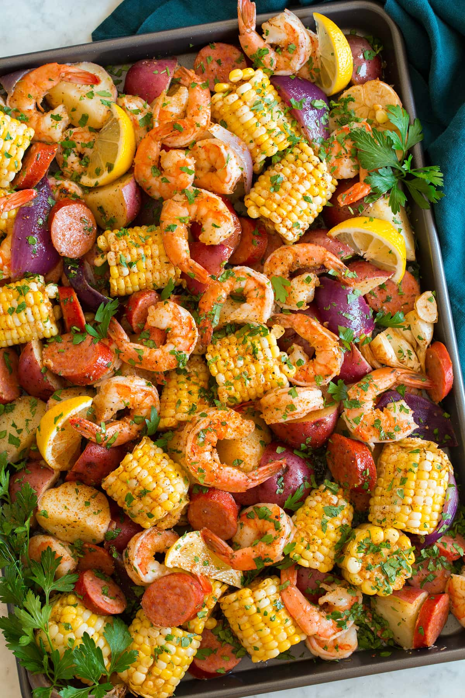

Southern Shrimp Boil

This shrimp boil recipe is easy to make, won't break the bank, and is bound to impress your guests. It's an easy meal to keep a crowd full and happy! I gurantee, you'll have freinds and family texting you weeks later asking you for that shrimp boil recipe.
If you're new to shrimp boils as a concept, prepare to be pleased.
After 23 years growing up in the south, I moved west to the sunny and gorgeous Los Angeles. I've found myself getting homesick every 6 months or so - southern recipes to bring me back to that southern charm. It's been a consistent hit when I make it for freinds from all over the place!
Ingredients
- 1 lb baby Dutch yellow potatoes
- 3 ears corn, cut each into 2 in pieces
- 1/4 cup unsalted butter, melted
- 6 cloves garlic, minced
- 1.5 tbs Old Bay seasoning
- 1 lb medium shrimp, peeled and deveined
- 12.8 ox smoked andouille sausage, thin sliced
- 1 lemon, cut into wedges
- 2 tablespoons parsley, chopped
Steps
- Preheat your oven to 400 degrees F. Lightly oil a baking sheet.
- In a large pot of boiling salted water, cook potatoes until just tender and parboiled, about 10-13 minutes. Stir in corn during the last 5 minutes of cooking time; drain well.
- In a small bowl, combine butter, garlic and Old Bay seasoning.
- Place potatoes, corn, shrimp and sausage in a single layer onto the prepared baking sheet. Stir in butter mixture and gently toss to combine.
- Place into oven and bake for 12-15 minutes, or until the shrimp are opaque and corn is tender.
- Place into oven and bake for 12-15 minutes, or until the shrimp are opaque and corn is tender.